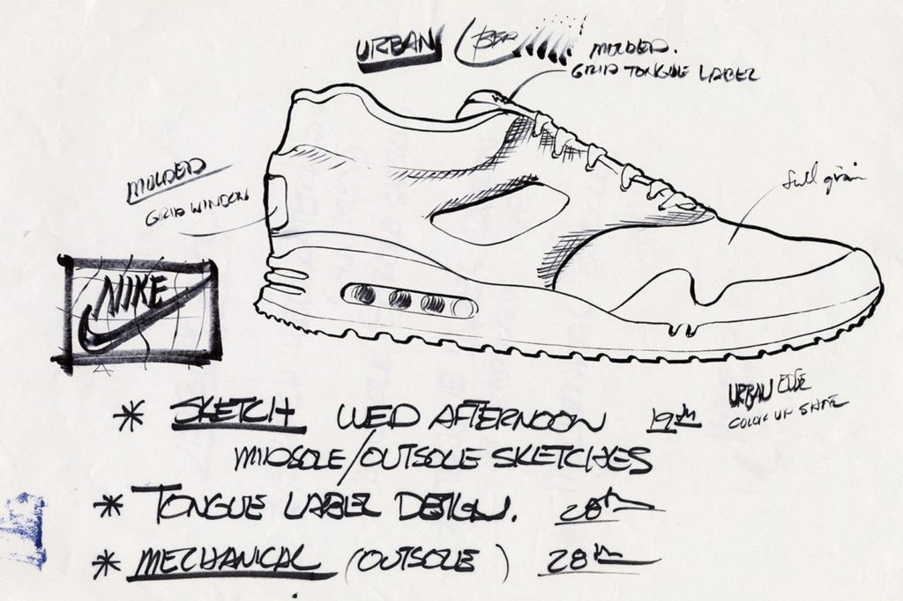
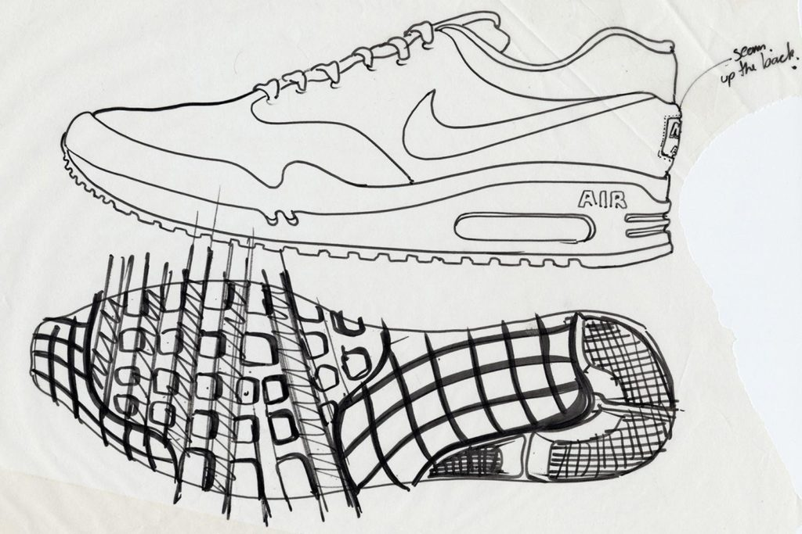

De Air max 1 OG. (1987)
Tinker Hatfield begon als bouwkundig ontwerper bij Nike’s hoofdkantoor in Oregon. Hij gebruikte zijn bouwkundige achtergrond om later uiteindelijk schoenen te ontwerpen. Zo heeft hij veel inspiratie uit gebouwen gehaald om zijn designs te creëren. Voor de Air Max 1 gold dit ook, hij nam het Centre Georges Pompidou in Parijs als inspiratiebron voor zijn ontwerp op de Air Max 1.


Wat was er zo revolutionair aan de schoen? De Air Cushioning Technology werd al eerder gebruikt in 1978, toen Nike de Air Tailwind lanceerde. Dit was de eerste sneaker die deze technologie bevatte. Dit revolutionaire idee om ‘lucht’ te gebruiken in de zool van een sneaker, kwam van NASA engineer: Frank Rudy. Wat bijzonder was aan de Air Max 1, was dat dit de eerste sneaker was waarbij deze Air Cushioning Technology zichtbaar was. Je kon letterlijk de ‘Air’ zien door een transparante deel in de zool.
Op 26 maart 1987 lanceerde Nike de eerste Air Max 1 in een rood-witte colorway. Deze kleuren: University Red en White worden beschouwd als de OG colorway van het model. In 1987 bracht Nike voor deze release ook hun allereerste TV-advertentie uit, met het bijpassende lied ‘Revolution’ van de Beatles.